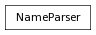

addPrefixToName
access to AttributeName of a node. returns an instance of the AttributeName class for the given AttributeName.
>>> NameParser('foo:bar').attr('spangle')
AttributeName(u'foo:bar.spangle')
Returns the namespace of the object with trailing colon included
Useful for cascading references. Returns all of the namespaces of the calling object as a list
Returns a new instance of the object with any occurrences of the given namespace removed. The calling instance is unaffected. The given namespace may end with a ‘:’, or not. If partial is True (the default), and the given namespace has parent namespaces (ie, ‘one:two:three’), then any occurrences of any parent namespaces are also stripped - ie, ‘one’ and ‘one:two’ would also be stripped. If it is false, only namespaces
>>> NameParser('foo:bar:top|foo:middle|foo:bar:extra:guy.spangle').stripGivenNamespace('foo:bar')
AttributeName(u'top|middle|extra:guy.spangle')
>>> NameParser('foo:bar:top|foo:middle|foo:bar:extra:guy.spangle').stripGivenNamespace('foo:bar', partial=False)
AttributeName(u'top|foo:middle|extra:guy.spangle')
Returns a new instance of the object with its namespace removed. The calling instance is unaffected. The optional levels keyword specifies how many levels of cascading namespaces to strip, starting with the topmost (leftmost). The default is 0 which will remove all namespaces.
>>> NameParser('foo:bar.spangle').stripNamespace()
AttributeName(u'bar.spangle')
Returns a new instance of the object with its current namespace replaced with the provided one. The calling instance is unaffected.